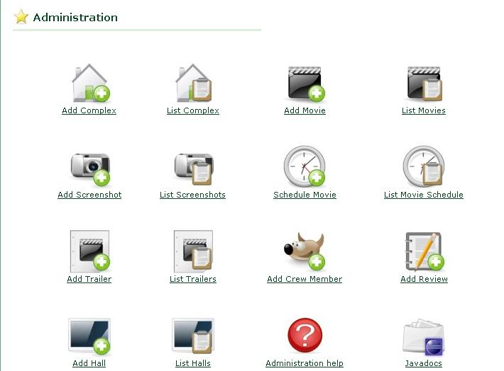

Als je ingelogd bent als administrator heb je een aantal extra mogelijkheden. Deze bevinden zich in het administratiepaneel. Dit bereik je door eerst in te loggen als administrator, daarna heb je in de menubalk een extra link naar het administratiepaneel. Dit paneel ziet er als volgt uit:

Figuur 3: Het administratiepaneel
Vanuit het administratiepaneel kan je dan verder navigeren naar de andere pagina's. Zo kan je kiezen om een film of een complex te gaan toevoegen, of om een lijst hiervan te tonen. Je kan hier ook foto's gaan toevoegen. Een ander belangrijk onderdeel van het administratiegedeelte is het maken van een programmatie. Als er reeds programmaties bestaan kan je hier ook een lijst van opvragen. Dit alles doe je door gewoon te klikken op het desgewenste icoon.